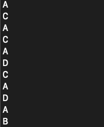
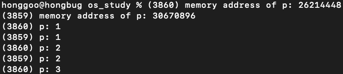
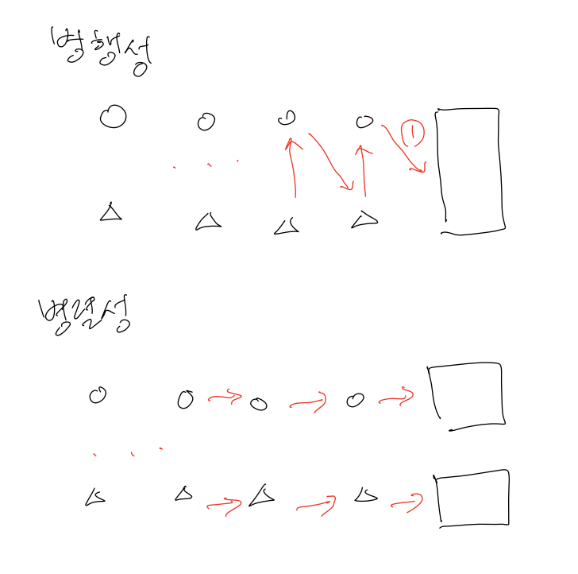

운영체제 개요
프로그램이 실행될 때 어떤일이 일어날까?
- 명령어가 실행된다.
- 프로세서는 명령어를 초당 수백만번 fetch, decode, execute 한다.
시스템을 사용하기 쉽게하기 위해(easy to use) 프로그램 실행 시 다양한 일들이 발생한다.
- 프로그램 간의 메모리 공유를 가능하게 한다.
- 프로그램이 장치와 상호작용을 가능하게한다.
시스템을 사용하기 편리하면서 정확하고 올바르게 동작시킬 책임이 있기 때문에 소프트웨어를 운영체제(operating stystem, OS)라고 부른다.
운영체제에는 세가지 기법을 사용한다.
- 가상화(virtualization)
- 병행성(concurrency)
- 영속성(persistence)
가상화
운영체제는 프로세서, 메모리, 또는 디스크와 같은 물리적(physical)인 자원을 이용하여 일반적이고 강력하고 사용이 편리한 가상(virtual) 형태의 자원을 생성한다. 때문에 운영체제를 때로는 가상 머신(virtual machine)이라고 부른다.
두가지 가상화가 존재한다.
- CPU 가상화
- 메모리 가상화
CPU 가상화
여러개의 CPU가 존재하는 것처럼 변환하여 동시에 많은 수의 프로그램을 실행시키는 것을 CPU 가상화(virtualizing the CPU)라 한다.
#include <stdio.h>
#include <stdlib.h>
#include <sys/time.h>
#include <assert.h>
int
main(int argc, char *argv[]){
if (argc != 2){
fprintf(strderr, "usage: cpu <string>\n);
exit(1);
}
char *str = argv[1]
while (1){
Spin(1);
printf("%s\n", str);
}
return 0;
/*
입력:
prompt> ./cpu A & ; ./cpu B & ./cpu C & ; ./cpu D &
출력:
(아래 그림)
*/
}
메모리 가상화
물리 메모리 모델은 매우 단순한 바이트의 배열이다. 메모리는 프로그램이 실행되는 동안 항상 접근한다.
#include <unistd.h>
#include <stdio.h>
#include <stdlib.h>
int
main(int argc, char *argv[]){
int *p = malloc(sizeof(int));
printf("(%d) memory address of p: %u\n", getpid(), (unsigned)p);
*p = 0;
int cnt = 0;
while (cnt <= 20) {
*p = *p + 1;
printf("(%d) p: %d\n", getpid(), *p);
cnt++;
}
return 0;
}
/*
입력:
prompt> ./mem & ; ./mem &
출력:
(24113) memory address of p: 0x20000
(24114) memory address of p: 0x20000
(24113) p:1
(24114) p:1
(24113) p:2
(24114) p:2
.
.
.
*/책에서는 위의 출력처럼 나온다고 했는데 나는 직접 해보니 아래의 그림처럼 다른 메모리값을 가지게 나왔다.

위의 출력 예제와 같이 각각이 독립적으로 메모리 주소 번지의 값을 갱신한다. 물리 메모리를 다른 프로그램과 공유하는 것이 아니라 각자 자신의 메모리를 가지고 있는 것 처럼 보인다. 운영체제가 메모리 가상화(virtualiziang memory)을 하기 때문에 이런 현상이 생긴다.
각 프로세스는 자신만의 가상 주소 공간(virtual address space)을 갖는다.
병행성
프로그램이 한 번에 많은 일을 하려할 때 (즉, 동시에) 발생하는 그리고 반드시 해결해야 하는 문제들을 가리킬 때 병행성 용어를 사용한다.
병행성과 병렬성의 차이
- 병행성: 동시에 처리 되는 것 ‘처럼’ 보임
- 병렬성: 진짜 동시에 처리 됨

영속성
DRAM과 같은 장치는 데이터를 휘발성(volatile) 방식으로 저장하기 때문에 메모리의 데이터는 쉽게 손시로딜 수 있따. 데이터를 영속적(persistence)으로 저장할 수 있는 하드웨어와 소프트웨어가 필요하다.